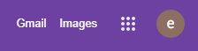
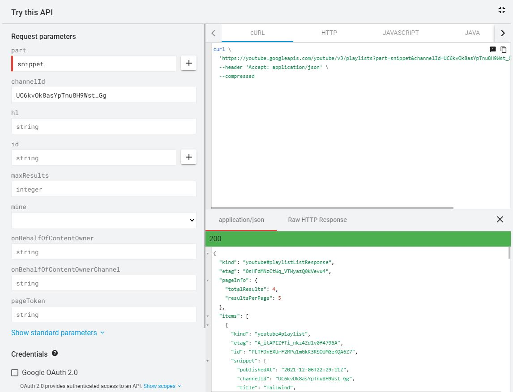

This article will go over how to connect to the YouTube API on the backend of your website. There are a few requirements that need to be met in order for us to begin properly setting up our API, first we will need a Google account as well as a YouTube account associated with our Google account.

Step Two
Navigate to the YouTube API Documentation. Head to the Google Developer Console in the link provided on the Documentation page in step 2, create a project.
Step Three
Create a project and name it what you would like, head to the library on the left hand side, select the YouTube API v3 in the search option or in the list provided on the page. Click create credentials.
Step Four
Select the YouTube API and click Public data below leave user data blank as we will be using an API key. Click next. Your API key will displayed, this can always be found again in the credentials section of the Google Developer Console. Click done.
Step Five
Open the YouTube API Documentation page once again and head to the Reference tab at the top.
Note we will be using the Playlist tab on the left-hand side to make our test queries.
Step Six
Expand the Try this API tab on the right, enter snippet in the part: and then your YouTube Channel Id in to the channelId: this can be found in the advanced settings of your YouTube account. Unclick 0Auth and leave API Key checked, as long as you are signed into your account after the previous steps your query should run. Test your queries here as it does not count towards your quota set by the API.

Step Seven
Now that we have confirmed our authentication and that the channel can be queried we can begin creating our code. First we will start with our .env file.
YOUTUBE_TOKEN=[YOUR API KEY]
And we're done with that.
Step Eight
We will be using Node and will require dotenv as well as the Google API's in our code.
require('dotenv').config();
const { google } = require('googleapis');